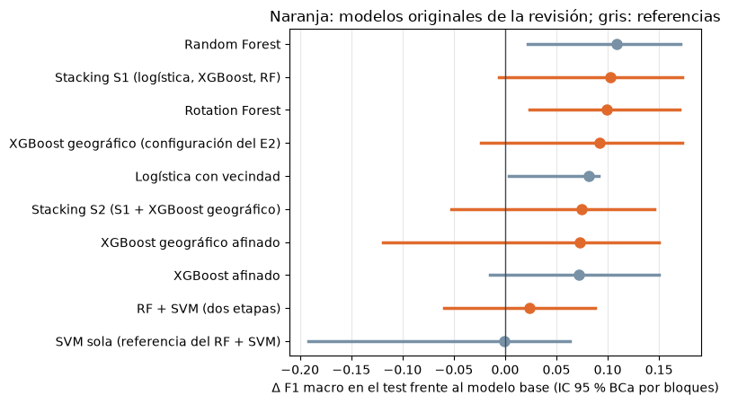
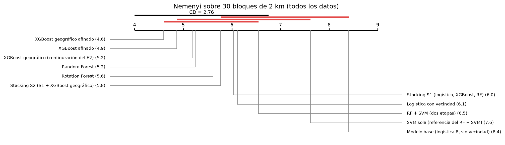

9. Todos los modelos originales de la revisión frente al modelo base#
Autores: María Carolina Cantillo Orozco (200179105) y Juan Camilo Oñoro Araujo (200177329)
Qué responde este capítulo
Pregunta. El objetivo del entregable es usar modelos que no se habían aplicado a la clasificación del estrato con datos catastrales (la revisión bibliográfica, capítulo 1) y comprobar si alguno supera al modelo base. El capítulo 8 respondió para el modelo principal, el XGBoost geográfico. ¿Qué pasa con los demás candidatos de la revisión?
Respuesta corta. Sin información del entorno (ronda 1), ningún candidato superaba al modelo base en el test. Con la vecindad física y todos los datos, tres modelos originales lo superan con significancia estadística: el XGBoost geográfico, el Rotation Forest y el stacking (30 bloques espaciales, Wilcoxon con Holm, p < 0.01, efecto mediano a grande). El Rotation Forest es además el único cuyo intervalo de test frente al base excluye el 0 (+0.099 de F1, IC 95 % [+0.024, +0.170]). Pero ninguno supera significativamente a los modelos convencionales que reciben la misma información: la mejora la explica sobre todo la vecindad física.
Este capítulo se agregó a la versión 3 el 19 de octubre de 2026. Los cálculos se hicieron con el código del
Entregable 3 (carpeta mejoras/ de su repositorio), con el mismo protocolo del capítulo 8: todas las viviendas,
los mismos 5 pliegues kNNDM de zonas nuevas y el mismo test. Los resultados están copiados en datos/revision_v3/.
9.1 Los nueve candidatos de la revisión y cuáles se probaron#
La Tabla III de la revisión reúne nueve modelos con evidencia de reducir el error frente a los clasificadores convencionales y que nunca se habían aplicado al estrato con datos catastrales (el capítulo 1 lista los cinco de mayor prioridad). Todos son, en ese sentido, modelos originales para esta aplicación.
# |
Candidato (Tabla III) |
Qué propone |
¿Se probó? |
Dónde |
|---|---|---|---|---|
1 |
XGBoost geográfico (Grekousis, 2025) |
XGBoost global más XGBoost locales con pesos espaciales |
Sí: modelo principal, adaptado a clasificación |
caps. 4, 6, 8 y sección 9.3 |
2 |
GWO-XGBoost |
XGBoost con hiperparámetros optimizados por el algoritmo del lobo gris |
Como idea: es un optimizador, no un modelo; el Entregable 3 comparó cuatro optimizadores y empatan |
Entregable 3, cap. 3 |
3 |
Bagged TAO Trees |
Ensamble de árboles oblicuos optimizados |
No: no tiene una implementación abierta confiable en Python |
— |
4 |
RF + SVM en dos etapas |
Random Forest elige las variables y una SVM clasifica |
Sí |
9.3 |
5 |
Rotation Forest |
PCA por grupos de variables antes de cada árbol |
Sí |
ronda 1 (cap. 6) y 9.3 |
6 |
EFSHB |
Selección de variables por ensambles |
No: con 35 variables la selección no es el cuello de botella |
— |
7 |
TPE-SVM |
SVM con optimización bayesiana (TPE) |
Sí |
ronda 1 (cap. 6) |
8 |
Stacking con selección de modelos base |
Un metamodelo combina las predicciones de varios modelos |
Sí |
9.3 |
9 |
NSGA-II multiobjetivo |
Hiperparámetros y variables a la vez |
No: igual que el 6 |
— |
Se probaron cinco de los nueve: los tres que no se probaron son optimizadores o selectores de variables (2, 6 y 9), o no tienen implementación disponible (3).
9.2 Ronda 1: sin información del entorno#
En la ronda 1 (capítulo 6) los candidatos recibieron solo las variables del modelo base y se validaron con bloques y buffer, el protocolo de la versión 2. El XGBoost es el control del modelo principal (no es original).
| Modelo | F1 macro CV (± desv.) | F1 macro test | Accuracy | Acc. balanceada | MAE ordinal | Acc. ±1 | Kappa cuadr. | AUC OvR | Log loss | |
|---|---|---|---|---|---|---|---|---|---|---|
| 0 | Logística B (físicas + ubicación) | 0.322 ± 0.085 | 0.492 | 0.611 | 0.499 | 0.439 | 0.955 | 0.835 | 0.901 | 0.911 |
| 1 | Moda por zona (4 km) | 0.187 ± 0.059 | 0.351 | 0.584 | 0.376 | 0.517 | 0.909 | 0.770 | 0.827 | 1.486 |
| 2 | XGBoost | 0.352 ± 0.027 | 0.375 | 0.572 | 0.410 | 0.471 | 0.959 | 0.825 | 0.831 | 1.135 |
| 3 | XGBoost geográfico | 0.320 ± 0.087 | 0.418 | 0.598 | 0.435 | 0.433 | 0.971 | 0.846 | 0.846 | 0.980 |
| 4 | Rotation Forest | 0.323 ± 0.123 | 0.450 | 0.651 | 0.455 | 0.390 | 0.962 | 0.851 | 0.912 | 0.887 |
| 5 | SVM RBF + TPE | 0.352 ± 0.096 | 0.453 | 0.595 | 0.506 | 0.523 | 0.912 | 0.800 | 0.815 | 1.174 |
Lectura. En la ronda 1 ningún candidato supera al modelo base en el test (logística 0.492). La SVM con TPE superó al base en la validación pero no se sostuvo en el test (optimismo de buscar en los mismos pliegues); el Rotation Forest tiene el menor error ordinal; el XGBoost geográfico queda por debajo. Sin información del entorno, los modelos flexibles no tienen de dónde sacar ventaja en una zona nueva.
9.3 Con la vecindad física y todos los datos#
Con la lección de la ronda 2 (capítulo 7: describir el entorno de la vivienda es lo que más ayuda), los candidatos se probaron con las mismas variables del capítulo 8 (modelo B + vecindad física de 8 vecinos) y con todas las viviendas:
XGBoost geográfico: se mantiene la configuración del capítulo 8 y, además, se buscaron sus hiperparámetros con todos los datos (6 configuraciones del modelo global × 9 de los modelos locales × 21 valores de α).
Rotation Forest: 40 árboles; las variables se reparten en grupos de 3 o 6 y cada grupo se rota con su PCA.
RF + SVM: un Random Forest ordena las variables y una SVM (Nyström) clasifica con las 10 o 20 más importantes.
Stacking: una logística multinomial combina las probabilidades fuera de muestra de la logística con vecindad, el XGBoost y el Random Forest; una segunda versión agrega el XGBoost geográfico.
Como referencias (no originales) se incluyen el Random Forest, el XGBoost y la logística con las mismas variables de vecindad. Cada configuración se eligió por la validación; el test se miró una sola vez, con IC 95 % BCa por bloques. Verificación: el modelo base vuelve a dar 0.460 en la validación y el XGBoost geográfico del capítulo 8, 0.572 en la validación y 0.585 en el test, las mismas cifras.
| tipo | F1 validación | F1 test | vs base, test [IC 95 % BCa] | bloques a favor | |
|---|---|---|---|---|---|
| Random Forest | referencia | 0.576 | 0.601 | +0.108 [+0.022, +0.170] | 6/7 |
| Stacking S1 (logística, XGBoost, RF) | original (revisión) | 0.598 | 0.596 | +0.102 [-0.006, +0.173] | 5/7 |
| Rotation Forest | original (revisión) | 0.598 | 0.593 | +0.099 [+0.024, +0.170] | 6/7 |
| XGBoost geográfico (configuración del E2) | original (revisión) | 0.572 | 0.585 | +0.092 [-0.024, +0.172] | 5/7 |
| Logística con vecindad | referencia | 0.575 | 0.574 | +0.081 [+0.003, +0.091] | 6/7 |
| Stacking S2 (S1 + XGBoost geográfico) | original (revisión) | 0.583 | 0.568 | +0.075 [-0.053, +0.145] | 5/7 |
| XGBoost geográfico afinado | original (revisión) | 0.581 | 0.566 | +0.073 [-0.119, +0.149] | 5/7 |
| XGBoost afinado | referencia | 0.575 | 0.565 | +0.072 [-0.015, +0.150] | 5/7 |
| RF + SVM (dos etapas) | original (revisión) | 0.553 | 0.517 | +0.024 [-0.060, +0.088] | 4/7 |
| Modelo base (logística B, sin vecindad) | modelo base | 0.46 | 0.493 | — | — |
| SVM sola (referencia del RF + SVM) | referencia | 0.55 | 0.493 | -0.001 [-0.192, +0.063] | 3/7 |

Lectura.
Rotation Forest: es el modelo original con mejor desempeño. Empata con el mejor en la validación (0.598) y en el test supera al modelo base por +0.099, IC [+0.024, +0.170], ganando en 6 de los 7 bloques: el único original cuyo intervalo excluye el 0.
Stacking: la versión con logística, XGBoost y Random Forest tiene la misma validación (0.598) y +0.102 en el test, pero su intervalo toca el 0 ([−0.006, +0.173]). Agregarle el XGBoost geográfico lo empeora.
XGBoost geográfico: la búsqueda con todos los datos eligió dar la mitad del peso a los modelos locales (α = 0.5, rejilla de 1 km, 5 % de vecinos por ancla) y subió la validación de 0.572 a 0.581, pero no mejoró el test (0.566 frente a 0.585 de la configuración del capítulo 8). Frente al XGBoost con el mismo modelo global, su parte geográfica no agrega F1 en el test (+0.001).
RF + SVM: supera al base en la validación pero no en el test (+0.024, IC [−0.060, +0.088]).
Sobre el intervalo del capítulo 8. Con el método BCa, el +0.092 del XGBoost geográfico frente al base tiene IC [−0.024, +0.172]; el capítulo 8 publicó [+0.034, +0.199] con bootstrap de percentiles. Con solo 7 bloques de test, la confirmación de esa diferencia depende del método del intervalo; por eso la sección 9.4 usa una prueba con más réplicas.
9.4 ¿Son estadísticamente significativas las diferencias?#
Con 11 modelos se sigue una secuencia jerárquica: una prueba global (Friedman), comparaciones dirigidas con corrección de Holm y el tamaño del efecto (delta de Cliff). La unidad con más réplicas son los 30 bloques espaciales de 2 km del entrenamiento con al menos 200 viviendas: el F1 de las predicciones fuera de muestra de cada modelo en cada bloque. Con los 7 bloques de test, en cambio, el p-valor más pequeño posible es 0.016 y ninguna diferencia puede ser significativa después de corregir por 10 comparaciones.
Friedman sobre 30 bloques: χ² = 39.0, gl = 10, p = 2.6e-05
| vs modelo base: p de Holm (Wilcoxon) | vs modelo base: δ de Cliff | vs logística con vecindad: p de Holm (Wilcoxon) | vs logística con vecindad: δ de Cliff | |
|---|---|---|---|---|
| Logística con vecindad | 0.007 | +0.35 (mediano) | — | — |
| XGBoost afinado | 0.009 | +0.48 (grande) | 1.0 | +0.21 (pequeño) |
| XGBoost geográfico (configuración del E2) | 0.009 | +0.43 (mediano) | 1.0 | +0.18 (pequeño) |
| XGBoost geográfico afinado | 0.004 | +0.51 (grande) | 0.548 | +0.24 (pequeño) |
| Random Forest | 0.009 | +0.43 (mediano) | 1.0 | +0.14 (despreciable) |
| Rotation Forest | 0.009 | +0.45 (mediano) | 1.0 | +0.15 (pequeño) |
| RF + SVM (dos etapas) | 0.1 | +0.31 (pequeño) | 1.0 | -0.04 (despreciable) |
| SVM sola (referencia del RF + SVM) | 0.1 | +0.18 (pequeño) | 0.858 | -0.16 (pequeño) |
| Stacking S1 (logística, XGBoost, RF) | 0.009 | +0.44 (mediano) | 1.0 | +0.07 (despreciable) |
| Stacking S2 (S1 + XGBoost geográfico) | 0.009 | +0.43 (mediano) | 1.0 | +0.11 (despreciable) |

Lectura.
Frente al modelo base, la mejora es significativa para todos los modelos con vecindad física, originales o no (Wilcoxon con Holm, p < 0.01), con efecto mediano a grande: δ de Cliff 0.45 el Rotation Forest, 0.43 y 0.44 los stacking, 0.43 y 0.51 el XGBoost geográfico (configuración del capítulo 8 y afinado). El RF + SVM no lo es (p = 0.10).
Frente a la logística con las mismas variables, ninguna diferencia es significativa (p de Holm ≥ 0.54, efectos despreciables o pequeños). Tampoco entre el XGBoost geográfico y el XGBoost (δ = 0.02).
9.5 Respuesta#
¿Algún modelo original de la revisión supera al modelo base?
Sí, con la información del entorno de la vivienda. Tres modelos que no se habían aplicado al estrato con datos catastrales (el XGBoost geográfico, el Rotation Forest y el stacking) superan al modelo base en zonas nuevas con significancia estadística y un efecto mediano a grande. El Rotation Forest es el más sólido: es el único original cuyo intervalo de test frente al base excluye el 0 (+0.099, IC [+0.024, +0.170], 6 de 7 bloques).
Pero la mejora no es del algoritmo. Frente a modelos convencionales que reciben la misma vecindad física (la logística, XGBoost o Random Forest), ningún modelo original gana de forma significativa. Lo que hace superar al modelo base es describir el entorno de la vivienda; los modelos originales lo aprovechan igual de bien, no mejor. La ventaja propia del XGBoost geográfico sigue estando en las zonas con datos cerca (capítulo 8).